Azure DevOps的Azure资源IaC编排实战
摘要
Azure DevOps和Terraform来编排和管理Azure云平台上的资源。
Azure DevOps是微软提供的一套持续交付和协作工具，而Terraform是一种基础设施即代码工具，可以帮助我们定义和管理基础架构资源。通过结合使用这两个工具，我们可以实现自动化的资源创建、更新和销毁，提高开发和部署的效率。
将详细介绍如何配置Azure DevOps和Terraform，以及如何使用它们来编排Azure资源。
- Checkov扫描，这个阶段运行Checkov，这是bridgeecrew的一个工具，它可以扫描Terraform配置，在部署之前发现常见的错误配置。扫描的结果被上传到Pipeline运行中，并作为报告提供。
- Terraform Validate，此阶段运行Terraform Validate命令检查Terraform文件是否有效，如果有问题则管道错误。规划，这个阶段运行规划命令。根据资源的状态，它会设置变量，这些变量用于确定执行的下一个阶段。地形计划命令的输出也上传到Azure DevOps。
- Terraform Apply (Auto Approval)，如果计划阶段确定对状态的唯一更改是添加，则运行此阶段，它执行地形应用并影响更改
- Terraform Apply(手动审批)，如果Terraform Plan阶段确定对状态的更改包括任何被破坏的资源，则运行此阶段，它将触发手动审批任务，提示某人在执行Terraform Apply命令之前进行检查。
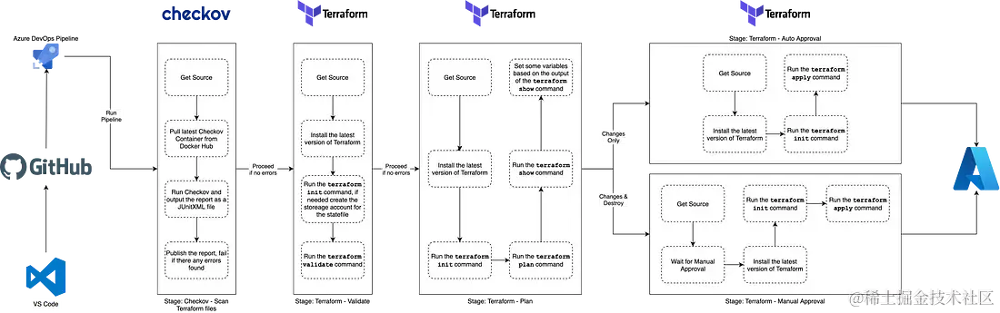
实战
创建仓库
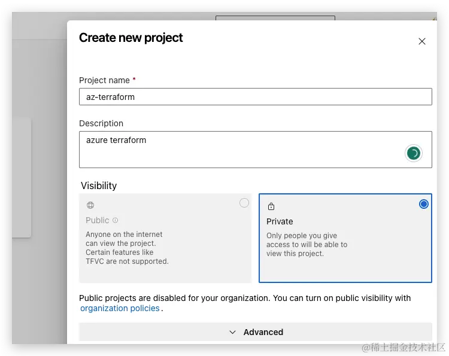
生成仓库密钥信息
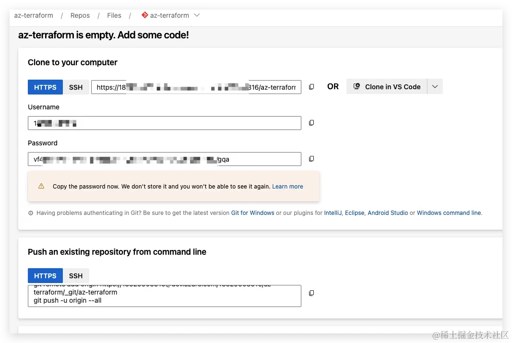
上传代码
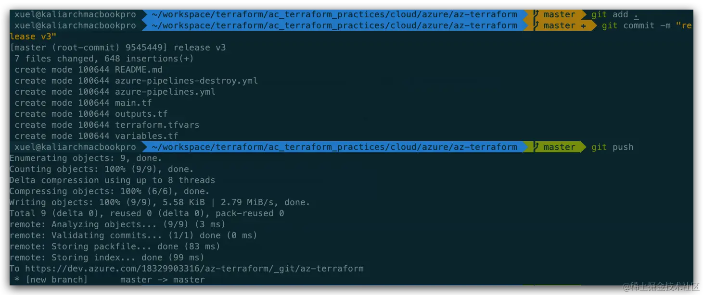
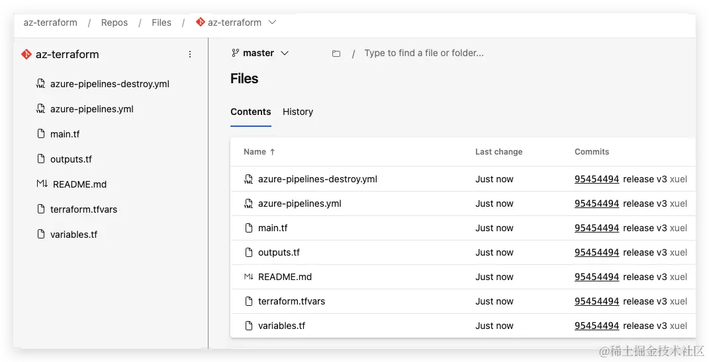
配置azure pipeline
代码仓库选择Azure Repos Git
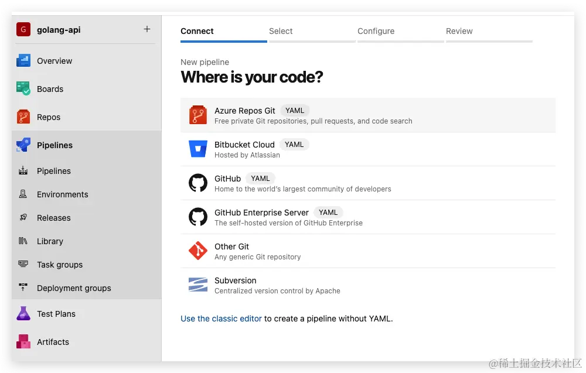
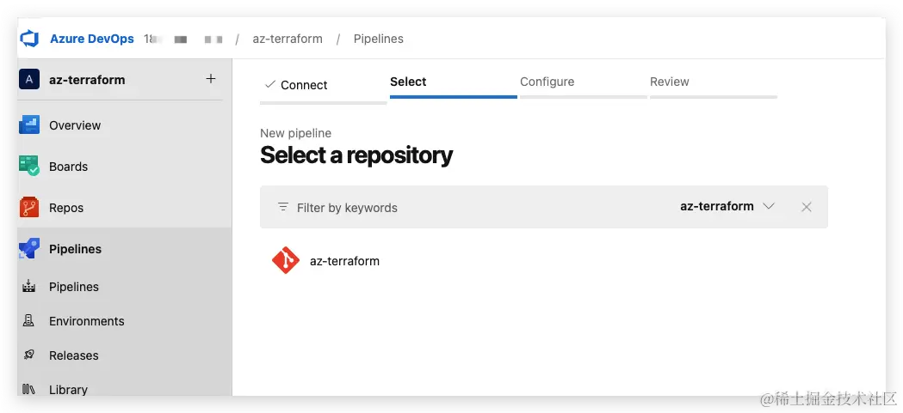
插件安装，确保仅安装一个插件
Terraform Azure DevOps extension by Charles Zipp.
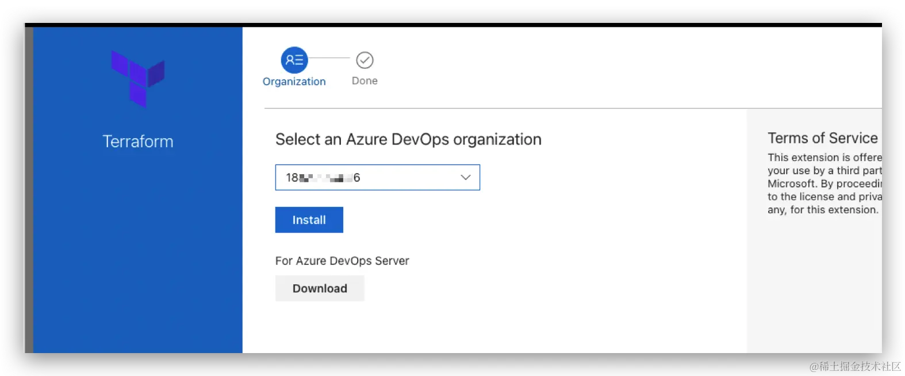
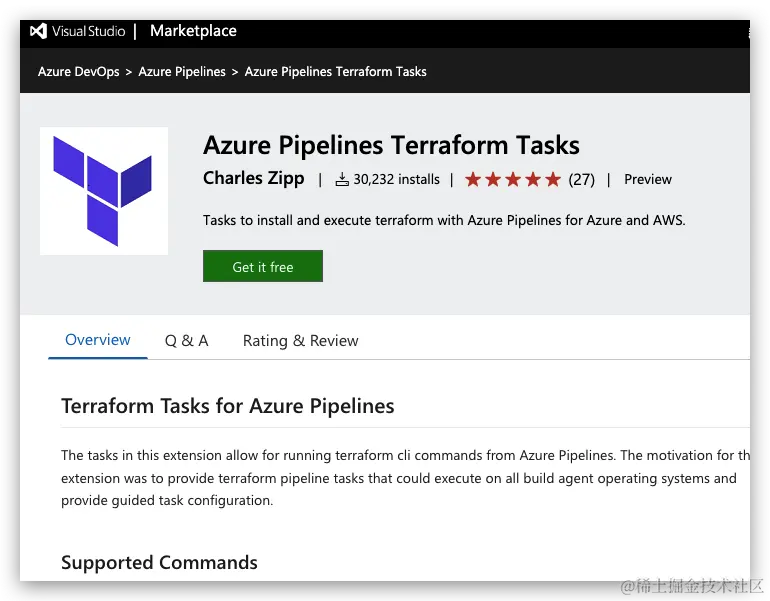
创建azure devops与azure的链接
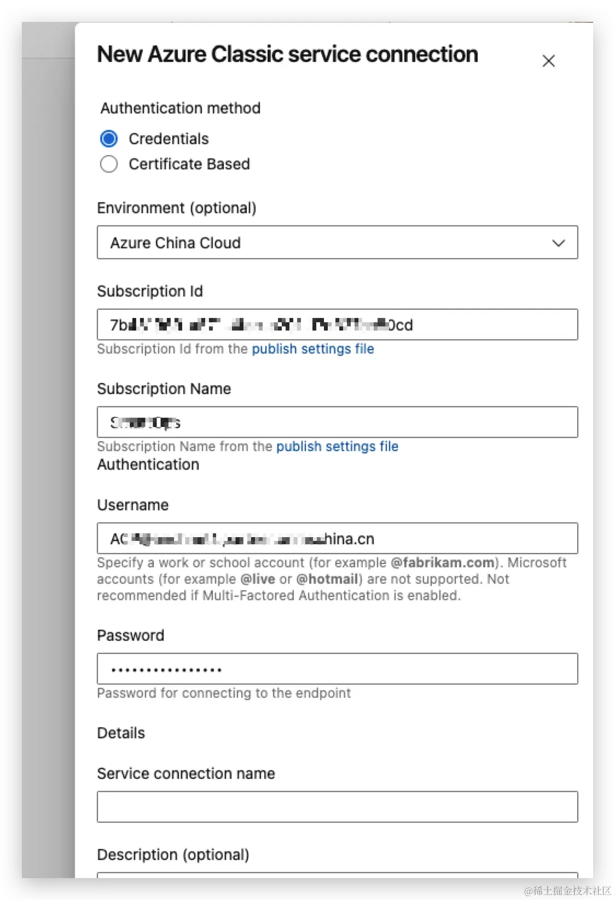
创建敏感信息
由于使用azurerm，针对敏感信息，Library用于存储。
export ARM_CLIENT_ID="8a68xxxxxxxxxxxxxx700"
export ARM_CLIENT_SECRET="oEBAyo-xxxxxxxxxxxxxxRhRY"
export ARM_SUBSCRIPTION_ID="7b431969xxxxxxxxxxxxxx27cc80cd"
export ARM_TENANT_ID="ea640xxxxxxxxxxxxxxf0909ddf9a"
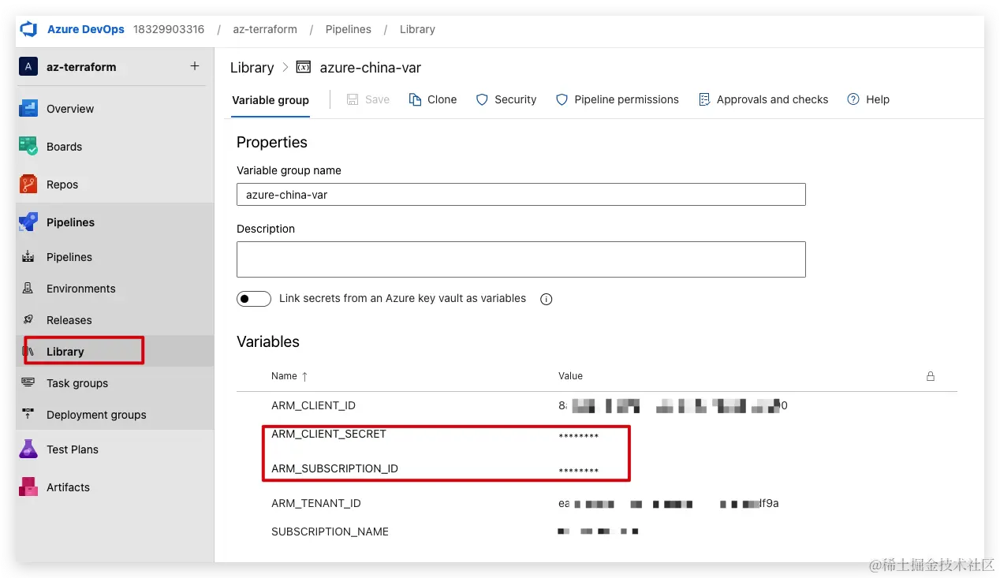
后期变量引用可以使用 $(ARM_CLIENT_ID)使用变量
为terraform创建backend
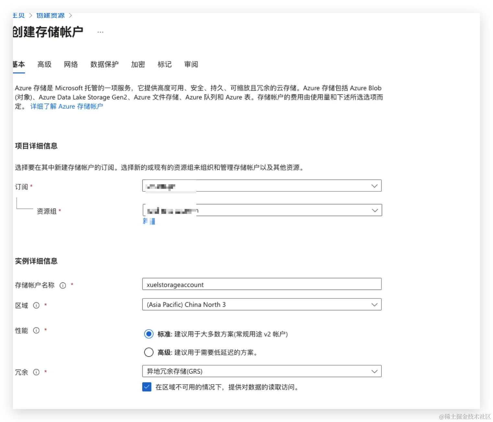
创建容器
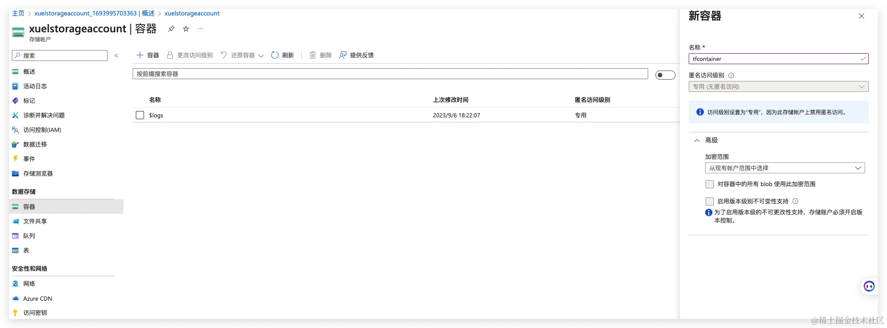
Pipeline Stages
Stage: Checkov Scan
运行的第一阶段是下载并使用Checkov执行Terraform文件的扫描，您将注意到下面的YAML，我们正在从Checkov container from Dockerhub拉出Checkov容器并运行它;
- stage: "runCheckov"
displayName: "Checkov - Scan Terraform files"
jobs:
- job: "runCheckov"
displayName: "Checkov > Pull, run and publish results of Checkov scan"
steps:
- bash: |
docker pull bridgecrew/checkov
workingDirectory: $(System.DefaultWorkingDirectory)
displayName: "Pull > bridgecrew/checkov"
- bash: |
docker run --volume $(pwd):/tf bridgecrew/checkov --directory /tf --output junitxml --soft-fail > $(pwd)/CheckovReport.xml
workingDirectory: $(System.DefaultWorkingDirectory)
displayName: "Run > checkov"
- task: PublishTestResults@2
inputs:
testRunTitle: "Checkov Results"
failTaskOnFailedTests: true
testResultsFormat: "JUnit"
testResultsFiles: "CheckovReport.xml"
searchFolder: "$(System.DefaultWorkingDirectory)"
displayName: "Publish > Checkov scan results"
在你自己的机器上使用Docker本地运行Checkov扫描的命令如下，只要确保它和你的Terraform代码在同一个文件夹中运行即可;
docker run \
--volume $(pwd):/tf \
bridgecrew/checkov \
--directory /tf \
--output junitxml \
--soft-fail \
> $(pwd)/CheckovReport.xml
正如您所看到的，我们正在挂载当前文件夹((pwd)变量)，因为我们已经使用(pwd)变量)，因为我们已经使用(pwd)变量)，因为我们已经使用(System.DefaultWorkingDirectory)变量将工作目录设置为代码签出的位置。
我们还将——output设置为junitxml，然后将输出管道输出到一个名为CheckovReport.xml的文件。
使用——soft-fail标志的原因是，如果我们不这样做，并且Checkov要发现任何问题，则容器将以导致此任务失败的状态退出。相反，一旦发布了扫描结果，如果报告中有任何错误，我们希望使任务失败。
我们使用内置的PublishTestResult任务发布测试结果，并将failTaskOnFailedTests选项设置为true。 我们将在稍后的帖子中设置当或如果此阶段失败时会发生什么。
Stage: Terraform Validate
这个阶段运行terraform validate命令，如果有任何问题，它将失败。正如你从下面的YAML中看到的，这个阶段依赖于runCheckov阶段，我们也在安装Terraform并在执行Terraform validate命令之前运行Terraform init;
- stage: "validateTerraform"
displayName: "Terraform - Validate"
dependsOn:
- "runCheckov"
jobs:
- job: "TerraformJobs"
displayName: "Terraform > install, init and validate"
continueOnError: false
steps:
- task: TerraformInstaller@0
inputs:
terraformVersion: "$(tf_version)"
displayName: "Install > terraform"
- task: TerraformCLI@0
inputs:
command: "init"
backendType: "azurerm"
backendServiceArm: "$(SUBSCRIPTION_NAME)"
ensureBackend: true
backendAzureRmResourceGroupName: "$(tf_environment)-$(tf_state_rg)"
backendAzureRmResourceGroupLocation: "$(tz_state_location)"
backendAzureRmStorageAccountName: "$(tf_state_sa_name)"
backendAzureRmStorageAccountSku: "$(tf_state_sku)"
backendAzureRmContainerName: $(tf_state_container_name)
backendAzureRmKey: "$(tf_environment).terraform.tstate"
displayName: "Run > terraform init"
- task: TerraformCLI@0
inputs:
command: "validate"
environmentServiceName: "$(SUBSCRIPTION_NAME)"
displayName: "Run > terraform validate"
This YAML code snippet defines a pipeline stage for validating Terraform configurations. Here's an analysis of the code:
1. Stage Definition:
- Name: validateTerraform
- Display Name: Terraform - Validate
- Dependencies: It depends on the completion of the "runCheckov" job before it can run.
2. Jobs within the Stage:
- Job Name: TerraformJobs
- Display Name: Terraform > install, init and validate
- Continue On Error: If set to false, the job will stop the pipeline if any step fails.
3. Steps within the Job:
-
Step 1: Install Terraform
- Task: TerraformInstaller@0
- Input: terraformVersion is set to
"$(tf_version)" - Display Name: Install > terraform
-
Step 2: Initialize Terraform Backend
- Task: TerraformCLI@0
- Input:
- Command: "init"
- Backend Type: "azurerm"
- Backend Configuration:
- Resource Group:
"$(tf_environment)-$(tf_state_rg)" - Location: "
$(tz_state_location)" - Storage Account Name: "
$(tf_state_sa_name)" - Storage Account SKU: "
$(tf_state_sku)" - Container Name:
$(tf_state_container_name) - Key: "
$(tf_environment).terraform.tstate"
- Display Name: Run > terraform init
-
Step 3: Validate Terraform Configuration
- Task: TerraformCLI@0
- Input:
- Command: "validate"
- Environment Service Name:
"$(SUBSCRIPTION_NAME)" - Display Name: Run > terraform validate
当这个阶段执行时，会发生的另一件事是作为terraform init任务的一部分，因为我们将ensureBackend设置为true，任务将检查我们希望用于存储terraform状态文件的Azure存储帐户是否存在，如果不存在，那么任务将帮助我们创建它。
一旦你的代码被验证，我们就可以进入下一个阶段。
Stage: Terraform Plan
这个阶段是事情变得更有趣的地方，因为我们的环境不会在各个阶段之间持续存在，我们需要安装Terraform并再次运行Terraform init。
一旦完成了这些，我们就可以运行terraform plan命令，由于Charles Zipp的terraform Azure DevOps扩展中的一些特性，我们可以通过设置publishPlanResults选项将运行terraform plan的结果发布到我们的管道运行中。
在我们看这个阶段的最后一个任务之前，让我们看一下整个阶段的代码;
- stage: "planTerraform"
displayName: "Terraform - Plan"
dependsOn:
- "validateTerraform"
jobs:
- job: "TerraformJobs"
displayName: "Terraform > install, init & plan"
steps:
- task: TerraformInstaller@0
inputs:
terraformVersion: "$(tf_version)"
displayName: "Install > terraform"
- task: TerraformCLI@0
inputs:
command: "init"
backendType: "azurerm"
backendServiceArm: "$(SUBSCRIPTION_NAME)"
ensureBackend: true
backendAzureRmResourceGroupName: "$(tf_environment)-$(tf_state_rg)"
backendAzureRmResourceGroupLocation: "$(tz_state_location)"
backendAzureRmStorageAccountName: "$(tf_state_sa_name)"
backendAzureRmStorageAccountSku: "$(tf_state_sku)"
backendAzureRmContainerName: $(tf_state_container_name)
backendAzureRmKey: "$(tf_environment).terraform.tstate"
displayName: "Run > terraform init"
- task: TerraformCLI@0
inputs:
command: "plan"
environmentServiceName: "$(SUBSCRIPTION_NAME)"
publishPlanResults: "PlanResults"
commandOptions: "-out=$(System.DefaultWorkingDirectory)/terraform.tfplan -detailed-exitcode"
name: "plan"
displayName: "Run > terraform plan"
- task: TerraformCLI@0
inputs:
command: "show"
environmentServiceName: "$(SUBSCRIPTION_NAME)"
inputTargetPlanOrStateFilePath: "$(System.DefaultWorkingDirectory)/terraform.tfplan"
displayName: "Run > terraform show"
- bash: |
if [ "$TERRAFORM_PLAN_HAS_CHANGES" = true ] && [ "$TERRAFORM_PLAN_HAS_DESTROY_CHANGES" = false ] ; then
echo "##vso[task.setvariable variable=HAS_CHANGES_ONLY;isOutput=true]true"
echo "##vso[task.logissue type=warning]Changes with no destroys detected, it is safe for the pipeline to proceed automatically"
fi
if [ "$TERRAFORM_PLAN_HAS_CHANGES" = true ] && [ "$TERRAFORM_PLAN_HAS_DESTROY_CHANGES" = true ] ; then
echo "##vso[task.setvariable variable=HAS_DESTROY_CHANGES;isOutput=true]true"
echo "##vso[task.logissue type=warning]Changes with Destroy detected, pipeline will require a manual approval to proceed"
fi
if [ "$TERRAFORM_PLAN_HAS_CHANGES" != true ] ; then
echo "##vso[task.logissue type=warning]No changes detected, terraform apply will not run"
fi
name: "setvar"
displayName: "Vars > Set Variables for next stage"
Here is an analysis of the provided YAML code snippet:
- Stage Definition:
- Name: planTerraform
- Display Name: Terraform - Plan
-
Dependencies: It depends on the completion of the "validateTerraform" stage before it can run.
-
Jobs within the Stage:
- Job Name: TerraformJobs
-
Display Name: Terraform > install, init & plan
-
Steps within the Job:
-
Step 1: Install Terraform
- Task: TerraformInstaller@0
- Input: terraformVersion is set to "$(tf_version)"
- Display Name: Install > terraform
-
Step 2: Initialize Terraform Backend
- Task: TerraformCLI@0
- Input:
- Command: "init"
- Backend Type: "azurerm"
- Backend Configuration:
- Resource Group: "$(tf_environment)-$(tf_state_rg)"
- Location: "$(tz_state_location)"
- Storage Account Name: "$(tf_state_sa_name)"
- Storage Account SKU: "$(tf_state_sku)"
- Container Name: $(tf_state_container_name)
- Key: "
$(tf_environment).terraform.tstate"
- Display Name: Run > terraform init
-
Step 3: Generate Terraform Plan
- Task: TerraformCLI@0
- Input:
- Command: "plan"
- Environment Service Name: "$(SUBSCRIPTION_NAME)"
- Publish Plan Results: "PlanResults"
- Command Options: "-out=$(System.DefaultWorkingDirectory)/terraform.tfplan -detailed-exitcode"
- Name: plan
- Display Name: Run > terraform plan
-
Step 4: Show Terraform Plan
- Task: TerraformCLI@0
- Input:
- Command: "show"
- Environment Service Name: "
$(SUBSCRIPTION_NAME)" - Input Target Plan or State File Path: "
$(System.DefaultWorkingDirectory)/terraform.tfplan" - Display Name: Run > terraform show
-
Step 5: Set Variables for Next Stage
- Bash Script:
- The script checks the Terraform plan for changes and sets variables accordingly.
- If changes are detected without destroy changes, it sets a variable and logs a warning.
- If changes with destroy changes are detected, it sets a different variable and logs a warning.
- If no changes are detected, it logs a warning that Terraform apply will not run.
- Name: setvar
- Display Name: Vars > Set Variables for next stage
This pipeline stage sets up Terraform by installing it, initializing the backend configuration for Azure, generating a Terraform plan, showing the plan, and then setting variables based on the changes detected in the plan for use in the next stage of the pipeline.
在我们运行了terraform计划之后，我们立即使用terraform运行terraform显示。我们刚刚生成的Tfplan文件。
当使用Charles Zipp的Terraform Azure DevOps扩展时，它实际上设置了一些非常有用的变量。
首先，如果由于TERRAFORM_PLAN_HAS_CHANGES命令而有任何更改，则将名为TERRAFORM_PLAN_HAS_CHANGES的变量设置为true。
当对.tfplan执行terraform show命令时，如果.tfplan包含任何正在被销毁的资源，则第二个变量名为terraform_plan_has_destroy_changes将被设置为true。
在该阶段的最后一个任务中，我们将使用bash设置一些变量，这些变量将帮助决定执行下面哪个阶段(如果有的话)。
因此，如果一下配置设置
TERRAFORM_PLAN_HAS_CHANGES = trueTERRAFORM_PLAN_HAS_DESTROY_CHANGES = false
然后安全地继续自动执行下一阶段，所以我们可以在下一阶段中选择它，我们将名为HAS_CHANGES_ONLY的变量设置为true。
Stage: Terraform Apply (Auto Approval)
只有在满足以下条件时才执行此阶段;
condition: |
and
(
succeeded(),
eq(dependencies.planTerraform.outputs['TerraformJobs.setvar.HAS_CHANGES_ONLY'], 'true')
)
正如您所看到的，我们正在引用在前一阶段使用以下echo命令设置的变量;
echo "##vso[task.setvariable variable=HAS_CHANGES_ONLY;isOutput=true]true"
然后通过添加阶段、作业、任务和变量本身的名称来引用变量，因此类似于;
dependencies.STAGE_NAME.outputs['JOB_NAME.TASK_NAME.VARIABLE_NAME']
整个阶段是这样的:
- stage: "autoTerraform"
displayName: "Terraform - Auto Approval"
dependsOn:
- "planTerraform"
condition: |
and
(
succeeded(),
eq(dependencies.planTerraform.outputs['TerraformJobs.setvar.HAS_CHANGES_ONLY'], 'true')
)
jobs:
- job: "TerraformAuto"
displayName: "Terraform > install, init & apply"
steps:
- task: TerraformInstaller@0
inputs:
terraformVersion: "$(tf_version)"
displayName: "Install > terraform"
- task: TerraformCLI@0
inputs:
command: "init"
backendType: "azurerm"
backendServiceArm: "$(SUBSCRIPTION_NAME)"
ensureBackend: true
backendAzureRmResourceGroupName: "$(tf_environment)-$(tf_state_rg)"
backendAzureRmResourceGroupLocation: "$(tz_state_location)"
backendAzureRmStorageAccountName: "$(tf_state_sa_name)"
backendAzureRmStorageAccountSku: "$(tf_state_sku)"
backendAzureRmContainerName: $(tf_state_container_name)
backendAzureRmKey: "$(tf_environment).terraform.tstate"
displayName: "Run > terraform init"
- task: TerraformCLI@0
inputs:
command: "apply"
environmentServiceName: "$(SUBSCRIPTION_NAME)"
displayName: "Run > terraform apply"
在最后运行Terraform apply之前，我们再次安装了Terraform并运行了Terraform init
Stage: Terraform Apply (Manual Approval)
除了包含一个在Terraform作业之前运行的作业之外，这个阶段几乎与自动审批完全相同;
- stage: "approveTerraform"
displayName: "Terraform - Manual Approval"
dependsOn:
- "planTerraform"
condition: |
and
(
succeeded(),
eq(dependencies.planTerraform.outputs['TerraformJobs.setvar.HAS_DESTROY_CHANGES'], 'true')
)
jobs:
- job: "waitForValidation"
displayName: "Wait > Wait for manual appoval"
pool: "server"
timeoutInMinutes: "4320" # job times out in 3 days
steps:
- task: ManualValidation@0
timeoutInMinutes: "1440" # task times out in 1 day
inputs:
notifyUsers: |
azure@mckendrick.io
instructions: "There are resources being destroyed as part of this deployment, please review the output of Terraform plan before approving."
onTimeout: "reject"
- job: "TerraformApprove"
displayName: "Terraform > install, init & apply"
dependsOn: "waitForValidation"
steps:
- task: TerraformInstaller@0
inputs:
terraformVersion: "$(tf_version)"
displayName: "Install > terraform"
- task: TerraformCLI@0
inputs:
command: "init"
backendType: "azurerm"
backendServiceArm: "$(SUBSCRIPTION_NAME)"
ensureBackend: true
backendAzureRmResourceGroupName: "$(tf_environment)-$(tf_state_rg)"
backendAzureRmResourceGroupLocation: "$(tz_state_location)"
backendAzureRmStorageAccountName: "$(tf_state_sa_name)"
backendAzureRmStorageAccountSku: "$(tf_state_sku)"
backendAzureRmContainerName: $(tf_state_container_name)
backendAzureRmKey: "$(tf_environment).terraform.tstate"
displayName: "Run > terraform init"
- task: TerraformCLI@0
inputs:
command: "apply"
environmentServiceName: "$(SUBSCRIPTION_NAME)"
displayName: "Run > terraform apply"
该作业基本上会使管道执行暂停24小时，在此之后，如果没有人批准运行，则作业将失败。该作业使用ManualValidation@0任务，有关该任务的更多详细信息，请参见
一旦批准，将执行Terraform作业，这将最终运行Terraform应用程序，这将导致您的Terraform状态文件中至少有一个资源被销毁。
运行Pipeline
现在让我们看看如何运行管道，首先让我们签入一些添加基本资源组的代码。 为此，Terraform代码如下所示;
resource "azurecaf_name" "rg_example" {
name = "demogroup"
resource_type = "azurerm_resource_group"
prefixes = ["dev"]
clean_input = true
}
resource "azurerm_resource_group" "resource_group" {
name = azurecaf_name.rg_example.result
location = "uksouth"
tags = merge(var.default_tags, tomap({ "type" = "resource" }))
}
我使用Azure CAF Name provider 提供程序来生成资源组的名称，然后使用AzureRM provider 提供程序来创建它。
https://github.com/russmckendrick/DevOpsTerraformPipeline/blob/main/azure-pipelines-destroy.yml